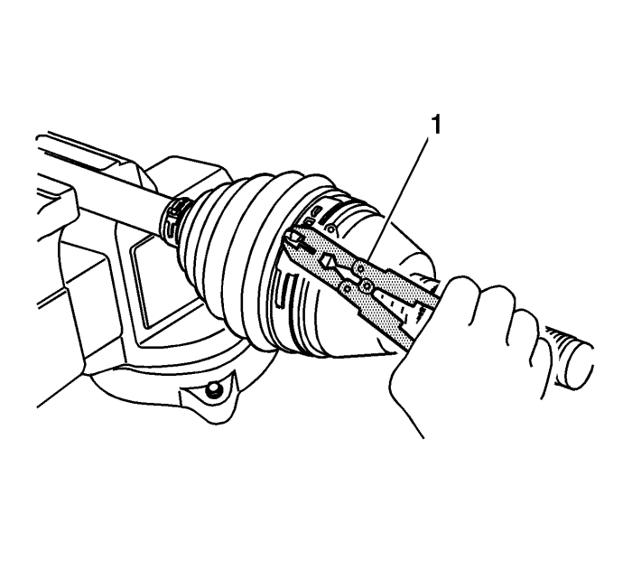

Separe el anillo de retención con loas tenazas J 8059 (1) y monte la junta exterior en el semieje.
Llene el retén de la junta con 170-190 g (6,0-6,7 onzas) de la grasa recomendada. Vuelva a empaquetar la junta con 170-190 g (6,0-6,7 onzas) de la grasa recomendada.

Monte nuevas abrazaderas de retención (una grande y una pequeña).
Fije la nueva abrazadera de retención de junta pequeña y la grande con las tenazas para abrazaderas de retención J 35566 (1).